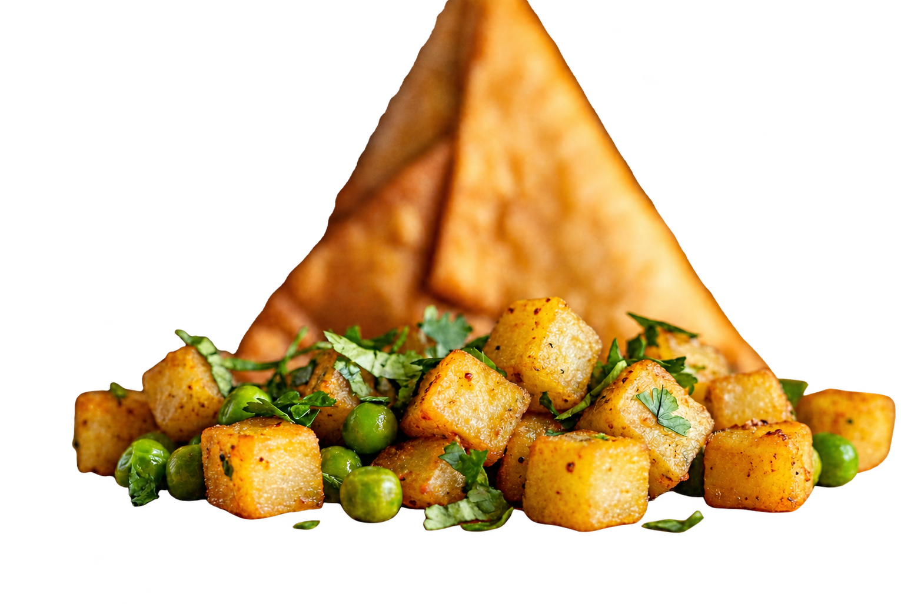

<!doctype html>
<html lang="en"><meta charset="utf-8"><title>Punjabi transparency test</title>
<style>body{margin:0;font:16px system-ui;background:#ddd}main{display:grid;grid-template-columns:1fr 1fr;gap:16px;padding:16px}figure{margin:0;background:white}figure:nth-child(2){background:#20252b;color:white}figcaption{padding:16px}img{display:block;width:100%;height:auto}</style>
<main><figure><figcaption>Light background</figcaption></figure><figure><figcaption>Dark background</figcaption></figure></main>
</html>
